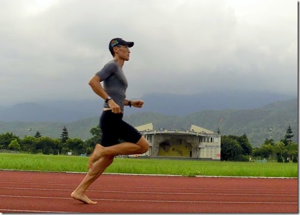
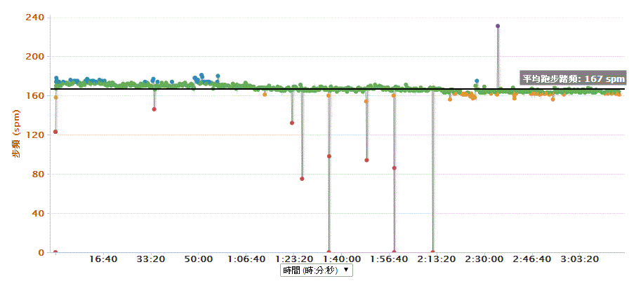
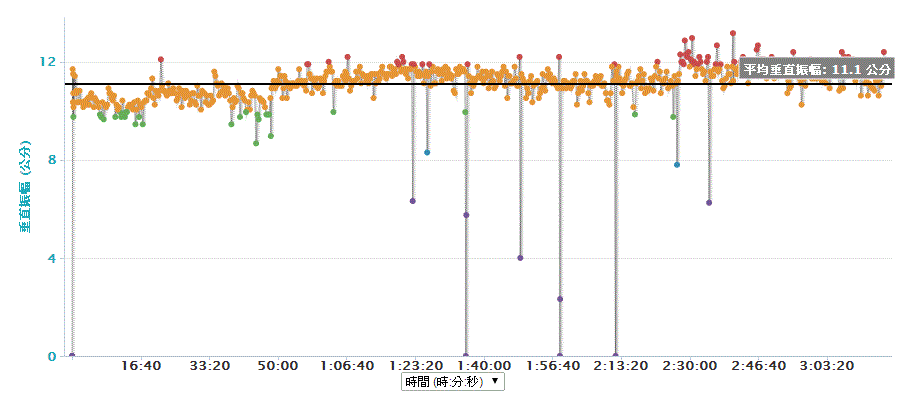
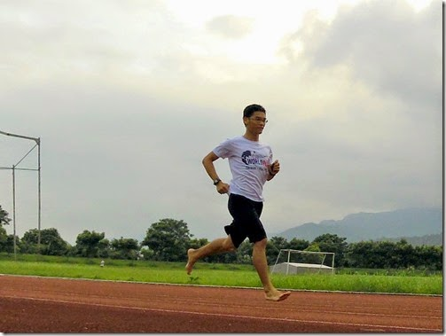
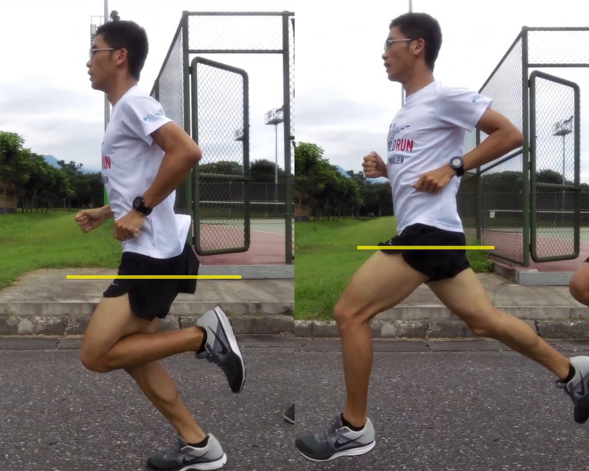

「量化」是科學化訓練的關鍵 PART 3：跑步技術如何量化？Foreruner 620 竟然做到了！
體能與肌力現在要量化都不難，但對技術來說就難了！沒想到 Garmin 這支Foreruner 620(下面簡稱 FR 620)竟然可以量測跑步技術中某些關鍵性指標。我指的關鍵性指標是：
- 步頻(每分鐘跑幾步，單位：step per minutes，簡寫為 spm)
- 垂直振幅(每步身體上下振動的幅度，單位：centimeter，簡寫為 cm)
- 著地時間(腳掌落地後在地面支撐的時間，單位：millisecond，簡寫為 ms)

我和譽寅已經用 FR 620 訓練了一個月，其他數據就先不談了，來分享一下 6 月 8 日那天跑全馬的數據。原本只是帶東華大學三十幾位馬拉松課的同學去跑台東馬拉松，但學期初時想說都帶同學去了就自己也報名下場，一開始就打算順順全場以等心率跑完，丹尼爾斯在書中指示馬拉松跑者在跑全馬時，全程的心率大約都落在 80~89%的最大心率，就我而言是 151~170bpm。比賽前我就設定自己在進入最後兩公里前，絕對不讓心率超過 170bpm，目標是以 165bpm 跑完前 40 公里，最後以平均心率 166bpm 完成。這是我第一次設定固定心率跑完全馬，這不但讓我前後兩個半馬的時間都差不多(第一個與第二個半馬都是 1 小時 38 分左右)，甚至全程的速度都可以維持，到最後都不太會掉速。這對已經長達半年沒有正規訓練的我而言(之前在忙東海岸馬拉松和《挑戰自我的鐵人三項》，之後又忙著新的線上化課表專案和翻譯的撰稿工作)，還能在這麼熱的天氣下愉快地邊看風景邊跑到 3 小時 17 分已經算是相當不錯了。
下面是這場台東馬拉松跑下來的平均數據和 Garmin Connect 上面的分析資料：
###
- 6/08 台東馬全程平均心率：166bpm
- 6/08 台東馬全程平均步速：每公里 4 分 45 秒
十個月後的目標是希望從 180 公里的腳踏車下來後還能繼續維持心率 166bpm 以每公里 4 分 15 秒的配速跑完全馬(在 226 中全馬跑進 3 小時)。有了這支穩定能量測到心率的設備後，目標就變得更明確了！有了這支 GPS 心率錶後，這個看似不可能的目標「具體化」後也變得沒那麼難了！
#
菁英選手的平均步頻很少落在 180 以下的
譯自 Daniels' Running Formula 第二章，作者丹尼爾斯自述：
在一九八四年在洛杉磯舉辦奧運那段時間，我和我太太每天在跑步比賽的會場，看不同跑者跑步並計算他們的步頻，有時預賽和決賽都看見同一位跑者，所以他的步頻也算了好幾次。那次奧運，我們紀錄了 50 多位男女跑者的步頻，距離從八百公尺到馬拉松都有。
經過計算後，所有的跑者當中只有一位的步頻每分鐘少於 180 下。八百公尺比賽的步頻最好能每分鐘超過 200 下，有時千五的跑者也會超過 200 下，但從三千公尺到全程馬拉松跑者的步頻都很接近，差別只在於距離愈長的跑者步距也跟著縮短。(在一九八四年奧運中只有女性才有三千公尺的比賽項目)
有一次在我們的實驗室，有位馬拉松奧運金牌得主前來當受試者。他在每英里跑七分速(每公里 4 分 22 秒)時步頻為 184；加速到每英里 6 分速(每公里 3 分 45 秒)時步頻提高到 186；再拉高到每英里 5 分速(每公里 3 分 7 秒)時步頻拉到 190。這表示他的速度增加 16.5%，步頻只增加 3%。顯而易見跑者似乎在某個特殊的步頻下會感到最自在，在不同的比賽提升速度時，通常是步距加大，步頻改變很小。
大部分的菁英跑者都有相同的跑步技術，其中也包括了高步頻。
6/08 台東馬全程平均步頻：167spm

第一次帶著這支 FR 620 跑全馬讓我嚇了一大跳，原本在訓練時步頻至少都有 175 以上，當然需要再努力，但還可以接受(菁英耐力型跑者基本上都落在 180~190spm，180spm 只是下限)。這次全馬跑下來最後量到的平均值竟然只有 167spm。「怎會如此之低？」因為在剛拿到時我已經測試過好幾次看它的步頻計算功能是否準確，前後試了數十次都能精準量到步數，所以基本上我相信 FR 620 紀錄下來的數據。所以藉由它的此項功能，我才知道自己在跑全馬的步頻竟如此之低。還需要好好加強！！！
因為步頻是決定效率的一大關鍵，所以我之後的訓練必然要好好提高步頻才行。目前的想法是在每次 E 強度訓練時，拿節拍器跑，設定在 185spm，先讓雙腳習慣較高的步頻，不然之後就算體能進步了，成績的成長還是會受限。就算一輩子無法達到國際級菁英選手的水準，但希望步頻能練到他們的水準。有了 FR 620 能幫我紀錄每次練跑的平均步頻，之後訓練也多了一項明確的目標。
###
上下振幅 11 公分，就像你每一步都在往上爬 11 公分的階梯一樣
譯自 Daniels' Running Formula 第二章：
我總是強調步頻要維持在每分鐘 180 下，最重要的理由在於減小落地衝擊。要記住：雙腳轉換支撐的速度愈慢，停留在空中的時間愈久；在空中停留的時間愈久，身體質心離地的距離愈高；身體質心離地愈高，下一步落地衝擊愈大。相信我，許多運動傷害的起因都來自於落地時的衝擊。
6/08 台東馬全程 平均垂直振幅：11.1 公分

這也讓我很興奮，原來一開始體力還不錯時垂直振幅還好，大約落在 9~10 公分，但進入山地與體力下滑後垂直振幅開始上升，我想應該是我用了更多全腳掌或腳跟著地的原因。總之，全程馬拉松跑下來每步平均上下振盪 11.1 公分，平均步頻 167 步×總時間 197 分鐘=32899 步，也就是說總共向上振了 32899×11.1=365178.9 公分=3651.79 公尺，可怕的高度啊！浪費了不少能量向上爬了 3.6 公里多。
經過研究顯示，垂直振幅會跟著步頻增加而減少。就像騎自行車前進時完全沒有振幅一樣，因為輪子有無限個支撐點所以是最有效率的移動工具，而我們只有兩條腿，所以同樣以時速二十公里在平地上移動時，騎自行車會比跑步輕鬆多了。到此可知其中的因果關係是很明顯的：我們需要先練步頻（轉換支撐的速率），才能減少振幅。
###
#
騰空時間愈長著地時間愈短，跑得愈快
6/08 台東馬全程 平均著地時間：238 毫秒

著地時間為何如此重要。因為你在跑步的過程中只有在騰空時身體才一起往前進，腳掌在著地時是處於靜止狀態的。所以騰空時間愈長、著地時間愈短，就跑得愈快。
著地時間取決於三種主要因素：
- 下肢對地面的反應速度(也就是你的爆發力)，在同樣的力道下速度愈快，著地時間愈短
- 腳掌落地瞬間下肢的「硬度」，硬度愈強，愈能重新利用身體下落時的衝擊力，就像高爾夫球落下時能比皮球彈得更快更高一樣。
- 腳掌的落地位置：當你腳掌落到身體重心(臀部)前方時，會像煞車一樣減緩原本的慣性速度，也會增加腳掌落地的時間。
總之：著地時間愈短，愈不會拖到跑步前進的慣性速度，菁英跑者大都在 200 毫秒以下，看來我努力的空間還很大。
速度愈快時，腳掌的著地時間也愈短。但並非所有的跑者在相同的速度下的著地時間都相同，通常菁英跑者在相同的速度下著地時間會比較短。因為著地時間愈短，跑步效率愈高，所以如果能在訓練時特別強調降低著地時間，就能有效增進跑步的經濟性。
我原本就懂這個道理，但著地時間很難「量化」，無法方便量化的訓練數據其實就沒什麼參考價值，但 FR 620 竟可以量化它，先不論到底是否完全準確(絕對數值不確定)，但至少目前當我特地以腳跟先著地來延長著地時間時，確實比我平常的數值還大得多；當我加快速度時，著地時間的數值也確實變小了，就此「相對數值」來說就具有參考價值。
註：菁英跑者又分兩類，腳後跟先著地的著地時間約在 199 毫秒附近，前足先著地約在 183 毫秒左右。其中在日本龍谷大學(Ryukoku University)也針對 415 位跑者做過研究，他們在半馬比賽的第 15 公里處架設高速攝影機，觀測每一位跑者的著地時間。他們得到一個相關性極強的結論，最後成績愈快的跑者，其著地時間愈短。當然：那次比賽中最快的跑者著地時間也是最短的。資料來源：Training Peaks: Ground Contact Time and Running Performance
譽寅的使用心得：

雖然我的步頻跟觸地時間都算是中上水平，但卻發現平均垂直振幅高達 10 公分左右，從前一直強調要多訓練高步頻，而這個功能為我帶來了新的訓練方向 - 降低垂直振幅，也就是要把這 10 公分垂直跳的力量盡可能地轉換成往前移動的力量，並保持原有的步頻與觸地時間。
一般穿鞋子跑跟赤腳跑，兩組數據比對後，發現平均垂直振幅從 10 公分下降到 7.8 公分，平均步頻也從 174spm 提升到 188spm，觸地時間同為 213 毫秒，而平均步幅則從 1.15 公尺下降到 0.97 公尺。下面黃線的「高度落差」就是我著地和騰空時上下振幅的高度：

我與譽寅關於步頻與振幅的跑步訓練影片：
下面是譽寅幫我拍攝「維持跑頻 185spm 在不同配速下跑姿的變化」，第一段是用 185 步頻跑 4:00~4:30/公里，第二段是用 185 步頻跑 3:00~3:20/公里：
下面是鐵人隊的柏泰幫忙拍攝，我跟譽寅同樣跑四分時，垂直振幅的比較：